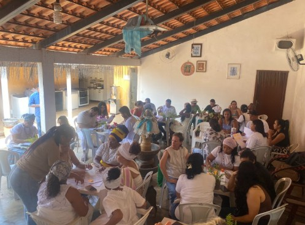
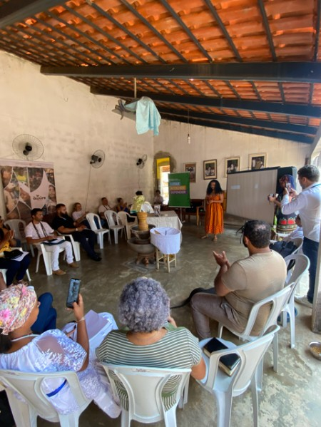
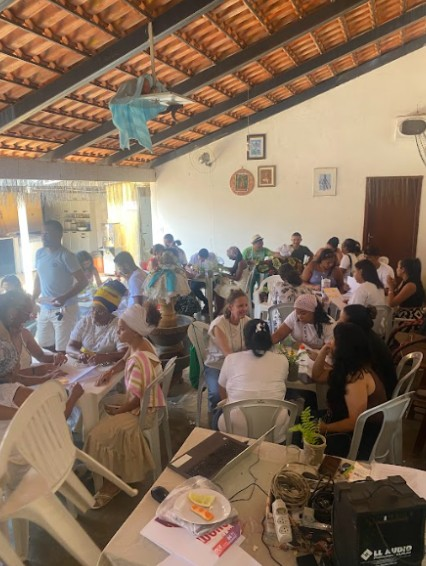
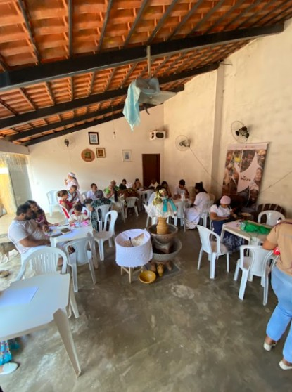

Ogunhê: caminhos da institucionalização das Casas de Axé
O projeto Ogunhê: Caminhos para a institucionalização das Casas de Axé tem como objetivo fortalecer as comunidades de matriz africana por meio da sua formalização jurídica e do desenvolvimento de capacidades de gestão. A iniciativa busca apoiar terreiros e lideranças na criação de associações, elaboração de estatutos, organização administrativa e obtenção de CNPJ, garantindo que essas casas possam acessar políticas públicas, editais e parcerias institucionais.
Sua importância reside no reconhecimento das Casas de Axé como espaços fundamentais de resistência cultural, espiritual e comunitária. Ao promover sua institucionalização, o projeto contribui para a proteção de seus direitos, a valorização de seus saberes tradicionais e o fortalecimento de sua autonomia. Além disso, possibilita melhores condições para captação de recursos, execução de projetos sociais e ampliação do impacto dessas comunidades em seus territórios, consolidando-as como protagonistas no desenvolvimento social e na promoção da diversidade e da justiça social.
A primeira edição do curso foi realizada em Palmas - TO com a participação de 20 Casas de Axé, e destas, 14 casas tiveram seus estatutos protocolados para sua institucionalização.
Imagens do projeto



